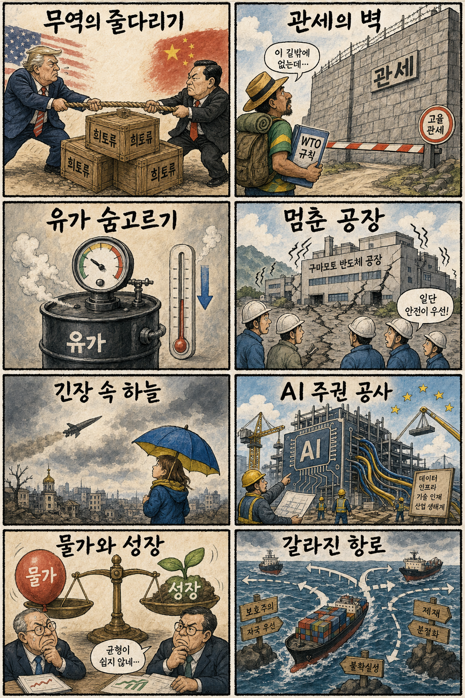
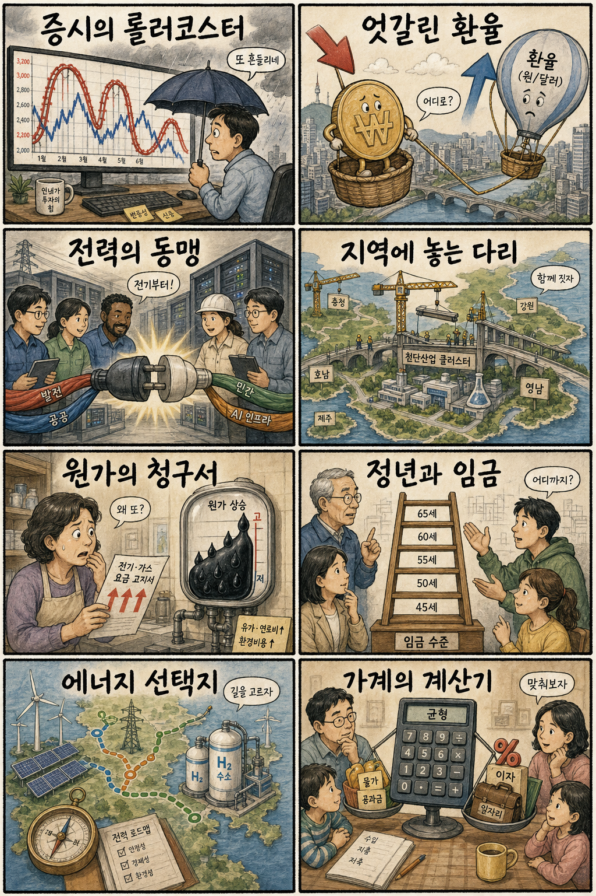

01
마이크론 18.36% 급등 — 반도체 위험선호 회복
내용요약 874.66달러로 18.36% 올랐습니다. 전날 급락 뒤 마이크로소프트 실적과 AI 인프라 낙관이 반도체 매수를 되살렸습니다.
예상여파 국내 메모리·HBM에는 심리 회복 요인이지만 전일 변동폭이 컸던 만큼 시초가 추격보다 가격 안정 확인이 우선입니다.
MORNING_BRIEFING_20260731
작성 시각: 2026-07-31 06:39 KST · 직전 미국 정규장과 2026-07-31 KST 당일 공개 기사 기준
미국 7월 30일 정규장은 다우 +1.19%, S&P 500 +1.66%, 나스닥 +2.78%로 반등했습니다. 마이크로소프트가 애저 성장으로 AI 투자 우려를 누그러뜨리며 15.51% 급등했고 반도체도 강하게 되살아났습니다. 다만 메타는 현금흐름 우려로 급락해 AI 지출의 성과 차별화가 뚜렷합니다. 한국 증시는 반도체 심리 회복이 우호적이지만 최근 급변동 뒤 시초가 추격보다 환율·외국인 수급 확인이 우선입니다.
| 지수 | 종가 | 등락률 | 한국 증시 영향 |
|---|---|---|---|
| 다우존스 | 52,208.06 | +1.19% | 광범위한 반등으로 국내 경기민감주의 낙폭 회복에 우호적 |
| S&P 500 | 7,437.63 | +1.66% | AI·대형기술주 주도 위험선호가 한국 대형주 심리를 개선 |
| 나스닥 종합 | 25,122.18 | +2.78% | 반도체 급반등이 국내 메모리·장비주 투자심리에 직접 호재 |
마이크로소프트와 반도체가 전일 낙폭을 크게 되돌렸습니다.
애저는 환호를, 메타의 현금흐름 감소는 경계를 받았습니다.
미국 메모리·AI칩 반등은 심리에 호재지만 변동성은 높습니다.
검증 표본과 수급·손익비 문턱 부족으로 공식 추천은 없습니다.
7월 30일 보고서는 문턱을 통과한 공식 추천이 없었으며 관심 연결종목만 제시했습니다. 사후 가격을 보고 추천 기록으로 바꾸지 않습니다.
| 종목 | 7/30 실제 시가 | 7/30 종가 | 시가→종가 |
|---|---|---|---|
| S-Oil | 129,900원 | 130,100원 | +0.15% |
| SK하이닉스 | 1,371,000원 | 1,322,000원 | -3.57% |
| 두산에너빌리티 | 59,500원 | 60,200원 | +1.18% |
| 지수 | 종가 | 등락률 | 해석 |
|---|---|---|---|
| 다우존스 | 52,208.06 | +1.19% | 광범위한 반등으로 국내 경기민감주의 낙폭 회복에 우호적 |
| S&P 500 | 7,437.63 | +1.66% | AI·대형기술주 주도 위험선호가 한국 대형주 심리를 개선 |
| 나스닥 종합 | 25,122.18 | +2.78% | 반도체 급반등이 국내 메모리·장비주 투자심리에 직접 호재 |
반도체·HBM, 데이터센터 전력, 클라우드 공급망, 낙폭과대 대형 성장주
현금흐름 부담 플랫폼, 고유가 민감 운송·화학, 단기 과열 테마주
내용요약 874.66달러로 18.36% 올랐습니다. 전날 급락 뒤 마이크로소프트 실적과 AI 인프라 낙관이 반도체 매수를 되살렸습니다.
예상여파 국내 메모리·HBM에는 심리 회복 요인이지만 전일 변동폭이 컸던 만큼 시초가 추격보다 가격 안정 확인이 우선입니다.
내용요약 451.10달러로 15.51% 상승했습니다. 애저 성장과 AI 수요가 대규모 투자비에 대한 시장 우려를 누그러뜨렸습니다.
예상여파 클라우드 매출로 AI 투자 회수가 확인되면 데이터센터·전력·반도체 공급망의 중기 수요 신뢰가 높아질 수 있습니다.
내용요약 485.39달러로 13.00% 올랐습니다. 반도체 전반 위험선호 회복과 AI칩 성장 기대가 동반 반영됐습니다.
예상여파 국내 HBM 공급망에는 우호적이지만 고객별 주문 가시성과 단기 과열을 분리해 볼 필요가 있습니다.
내용요약 241.54달러로 7.40% 상승했습니다. 전날 실적 뒤 매도에 이어 AI 수요와 반도체 반등이 저가매수를 불렀습니다.
예상여파 설계자산 성장 기대가 살아났지만 높은 밸류에이션과 스마트폰 수요 둔화 우려는 계속 점검해야 합니다.
내용요약 539.03달러로 7.95% 하락했습니다. AI 투자 확대 속 잉여현금흐름 급감과 수익성 부담이 실적 이후 매도를 키웠습니다.
예상여파 AI 매출 성장만큼 자본지출과 현금창출력이 중요해져 고투자 플랫폼의 밸류에이션 차별화가 커질 수 있습니다.
나스닥과 미국 반도체의 강한 반등은 삼성전자·SK하이닉스와 장비주의 투자심리를 되살릴 수 있습니다. 다만 전일 KOSPI는 시가 대비 -1.55% 밀렸고 최근 가격 변동폭이 비정상적으로 컸습니다. 원·달러 환율과 외국인 현물·선물 동반 수급, 반도체 대형주의 첫 30분 저점 방어를 확인하기 전에는 미국 상승분을 그대로 추격하지 않는 편이 안전합니다.
오늘은 추천 없음 — 현금 관망
미국 기술주 반등만으로 국내 종목의 전일까지 외국인·기관 수급, 컨센서스 변화, 30건 이상의 유사 조건 보정 확률과 예상 손익비 1.5를 동시에 검증할 수 없습니다. 임의 확률·점수로 75점 문턱을 채우지 않습니다.
관심 연결종목 SK하이닉스(미국 메모리 반등), 삼성전자(파운드리·대형주 수급), 두산에너빌리티(AI 데이터센터 전력)는 관찰 대상이며 매수 추천이 아닙니다. 장전 예상 급등 또는 시초가 급등 시 추격매수 금지입니다.
시초가 상승 뒤 첫 30분 저점과 거래대금을 확인합니다.
두 시장에서 동반 순매수가 이어지는지 봅니다.
원화 강세와 주가 약세의 엇갈림이 해소되는지 점검합니다.
WTI 숨고르기와 미국 장기금리 방향을 함께 봅니다.
핵심 요약: AI 투자는 모델에서 데이터센터 금융·전력·파운드리로 빠르게 확장되고 있습니다. 앤스로픽과 중국 문샷AI의 자금 조달, 국내 데이터센터 협력체, 삼성의 미국 생산 계획과 구글 로봇 AI가 인프라와 현장 적용 경쟁을 동시에 보여줍니다.
내용요약 정부와 기업이 AI 데이터센터 생태계의 투자·전력·인프라 과제를 함께 풀기 위한 협력체를 출범시켰다는 보도입니다.
예상여파 데이터센터 증설의 실행 속도는 빨라질 수 있지만 계통 연결, 전력 조달과 지역 수용성이 실제 투자 일정을 좌우합니다.
내용요약 앤스로픽이 구글의 보증을 바탕으로 데이터센터 건설 자금 150억달러를 조달한다는 보도입니다. 대규모 AI 인프라 투자가 회사채·프로젝트금융 시장으로 확대되고 있습니다.
예상여파 모델 경쟁이 컴퓨팅 자산 확보전으로 옮겨가며 반도체·전력·냉각 수요는 늘 수 있으나 레버리지와 장기 수익성 검증 부담도 커집니다.
내용요약 중국 문샷AI가 키미 K3 관심 속 대규모 투자 라운드에서 약 5조원을 유치한다는 보도입니다.
예상여파 중국 생성형 AI의 자본력과 모델 경쟁이 강화되며 아시아 AI 서비스·클라우드 시장의 가격 경쟁도 거세질 수 있습니다.
내용요약 삼성이 역대급 실적을 공개한 가운데 연말 미국 파운드리 제2공장 건설 계획을 제시했다는 보도입니다.
예상여파 미국 현지 생산 확대는 고객 접근성과 공급망 대응력을 높일 수 있으나 수율, 고객 확보와 투자비 회수 속도가 핵심입니다.
내용요약 구글이 전구 교체 같은 정교한 손동작 과제에서 높은 성공률을 보인 로봇 AI를 공개했다는 보도입니다.
예상여파 로봇 지능이 연구실을 넘어 서비스·물류·제조 현장에 적용될 가능성이 커지며 센서와 정밀 구동부 수요도 늘 수 있습니다.
핵심 요약: 미·중 희토류 협상과 브라질의 WTO 제소가 관세 질서의 긴장을 보여줍니다. 우크라이나 무기 공급망과 구마모토 반도체 공장 중단은 안보·재난 위험이 산업 공급망에 곧바로 번지는 구조를 다시 드러냈습니다.
내용요약 러시아가 약 1년 만에 우크라이나를 향해 북한제 미사일을 사용한 정황이 있다는 보도입니다.
예상여파 무기 공급망과 제재 집행 문제가 다시 부각되며 동북아·유럽 안보 협력과 방공 수요가 강화될 수 있습니다.
내용요약 브라질이 미국의 추가 관세가 무역협정에 어긋난다며 세계무역기구에 제소했다는 보도입니다.
예상여파 분쟁이 장기화하면 농산물·원자재 교역 비용과 기업의 원산지·관세 대응 부담이 커질 수 있습니다.
내용요약 미·중 경제수장이 9월 정상회담을 앞두고 희토류와 무역제재, 기존 합의 이행을 논의했다는 보도입니다.
예상여파 희토류 수출과 기술 규제의 예측 가능성이 반도체·배터리 공급망 투자심리를 좌우할 전망입니다.
내용요약 지진 영향으로 일본 구마모토의 반도체 공장 가동이 멈췄으며 정상화 시점이 불투명하다는 보도입니다.
예상여파 중단이 길어지면 자동차·산업용 반도체 공급 일정에 부담이 생길 수 있어 피해 범위와 재가동 공지가 중요합니다.
내용요약 중동 긴장이 이어지는 가운데 서부텍사스산 원유가 약 1% 하락했다는 보도입니다.
예상여파 유가 숨고르기는 운송·화학과 물가 부담을 일부 낮추지만 지정학 뉴스에 따른 급변 가능성은 남아 있습니다.

핵심 요약: 증시와 환율 신호가 엇갈리는 가운데 대규모 지역 첨단산업 투자가 실행 단계로 들어가고 있습니다. AI 데이터센터와 산업 클러스터의 전력 수요가 커지는 시점에 연료비 상승은 한전 재무와 공공요금 부담을 다시 부각합니다.
내용요약 원화 가치가 올라도 코스피가 긴축 우려에서 벗어나지 못하는 시장 상황을 분석한 보도입니다.
예상여파 환율 안정만으로 주가 반등을 단정하기 어려우며 금리와 기업 이익, 외국인 수급을 함께 봐야 합니다.
내용요약 주가가 크게 흔들리는 동안 원·달러 환율은 하락해 증시와 외환시장이 극단적으로 엇갈린 배경을 다룬 보도입니다.
예상여파 자산별 신호가 충돌하면 단기 방향 예측보다 유동성 관리와 현·선물 수급 확인이 중요해집니다.
내용요약 영·호남 등 지역에 대규모 민간 투자를 유도해 첨단산업 클러스터를 구축하려는 계획을 다룬 보도입니다.
예상여파 계획이 실제 착공과 고용으로 이어지려면 전력·용수·교통 인프라와 인허가 일정이 뒷받침돼야 합니다.
내용요약 충청권 392조원 규모 투자 지원을 위한 민관합동 태스크포스가 첫 회의를 열었다는 정부 발표입니다.
예상여파 반도체·첨단산업 투자 집행이 빨라질 수 있으나 중복 투자와 지역 인프라 병목을 조정하는 실행력이 관건입니다.
내용요약 중동발 연료비 상승이 본격 반영되면서 한국전력의 재무 개선 흐름에 부담이 될 수 있다는 보도입니다.
예상여파 연료비와 전기요금의 간극이 커지면 발전원가, 공공요금과 산업계 비용 부담을 둘러싼 정책 논의가 다시 커질 수 있습니다.
